About Me
Atmospheric scientist studying monsoon systems and climate intervention
I am a fifth-year PhD research scholar at the Centre for Atmospheric and Oceanic Sciences (CAOS), Indian Institute of Science, Bangalore.
My research focuses on Indian Summer Monsoon Low-Pressure Systems (LPS) — their climatology, model biases, and how they respond to stratospheric aerosol geoengineering. I use the CESM2.1.3 fully coupled Earth system model alongside ERA5 reanalysis to investigate monsoon dynamics and regional climate risks over South Asia.
Education
Academic journey
Research
Current projects on monsoon LPS and stratospheric geoengineering
Response of Monsoon Low-Pressure Systems to UNIFORM Geoengineering
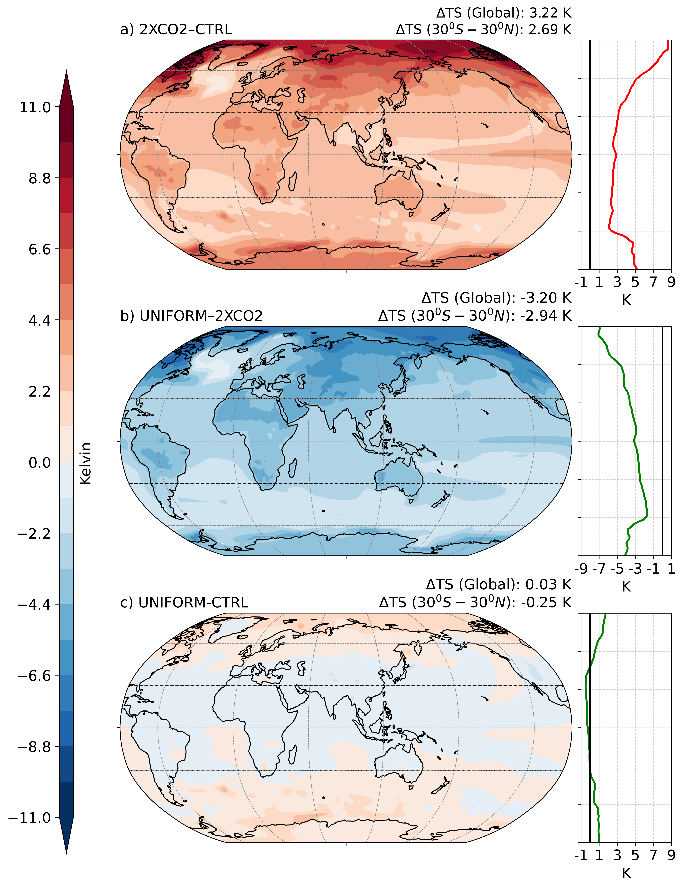
This work investigates how Low-Pressure Systems (LPS) during the Indian Summer Monsoon respond under the UNIFORM geoengineering experiment, in which stratospheric sulfate aerosols are uniformly prescribed to counteract warming from doubled atmospheric CO₂, using the fully coupled CESM2.1.3 climate model. By comparing UNIFORM, doubled CO₂, and control simulations, I analyse changes in the frequency, intensity, tracks, duration, and rainfall contribution of monsoon LPS. Results show that although aerosol intervention substantially offsets large-scale warming, it also modifies land–sea thermal contrast, atmospheric circulation, and moisture transport — key drivers of LPS formation — highlighting that geoengineering impacts extend beyond global temperature recovery and can significantly influence regional rainfall and climate risks over South Asia.
Accounting for the Bias in the Median Track of Indian Summer Monsoon Low-Pressure Systems in an Earth System Model

Indian Summer Monsoon LPS are among the most important rain-bearing weather systems over the subcontinent, contributing a major share of seasonal rainfall over central, eastern, and northern India. Using CESM2.1.3 and ERA5 reanalysis, this study shows that the model produces a systematic southward shift in LPS genesis and tracks, linked to a southward-displaced monsoon low-level jet and stronger dry-air intrusion from West Asia and the Arabian region. These circulation errors suppress LPS development into northern India, causing reduced rainfall over the monsoon core zone and excessive rainfall farther south. Similar biases are found across CMIP models, indicating a long-standing challenge in monsoon simulation that must be addressed for better seasonal forecasts and future climate projections.
Publications
Peer-reviewed articles and conference papers
Awards & Fellowships
Recognitions received throughout my academic career
Photography
Moments captured through my lens — nature, fieldwork, and travels
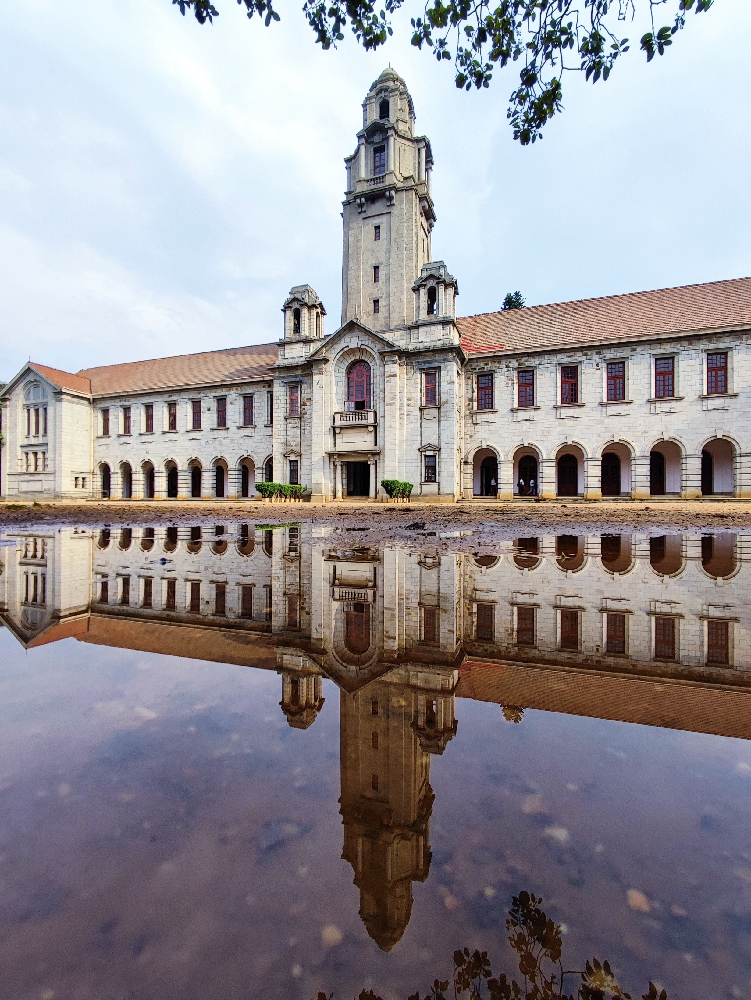
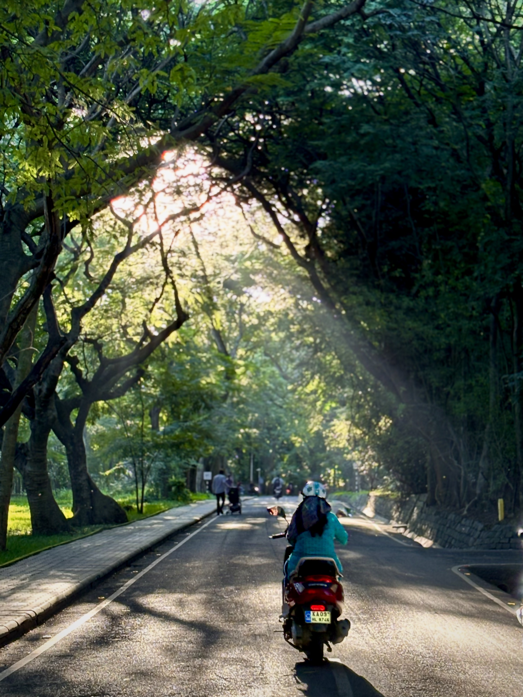
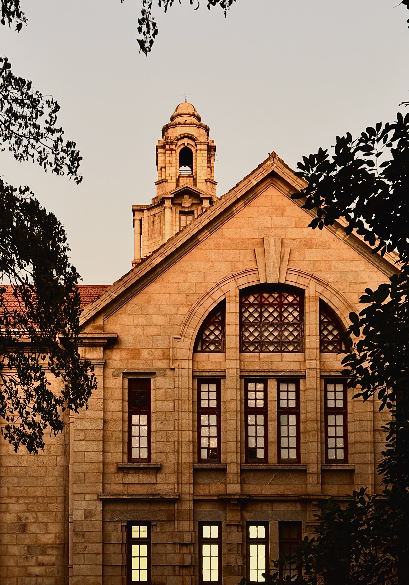
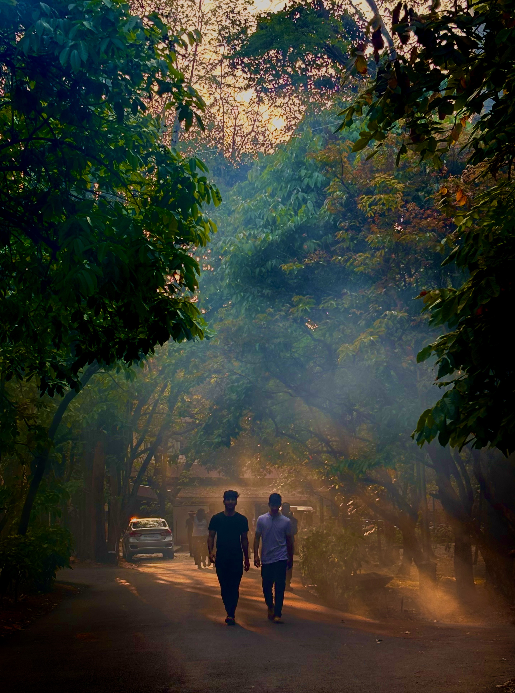
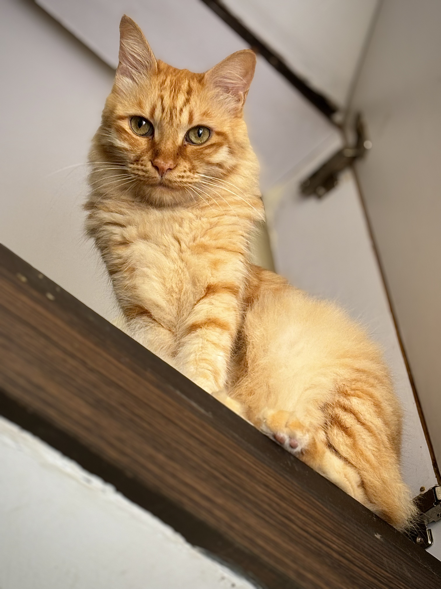
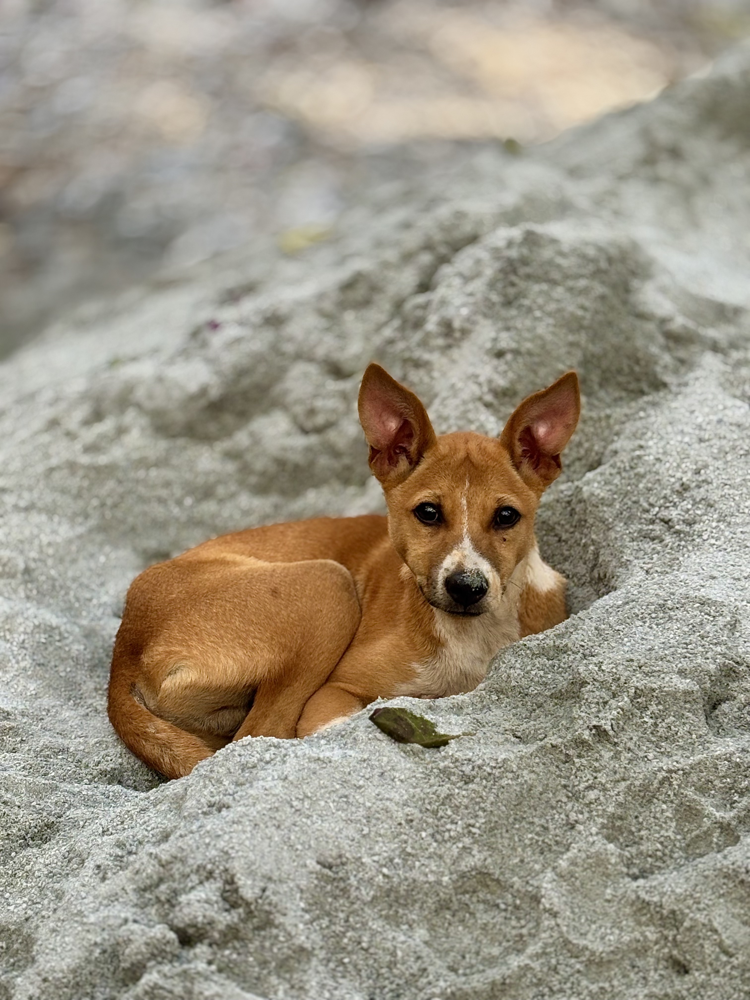
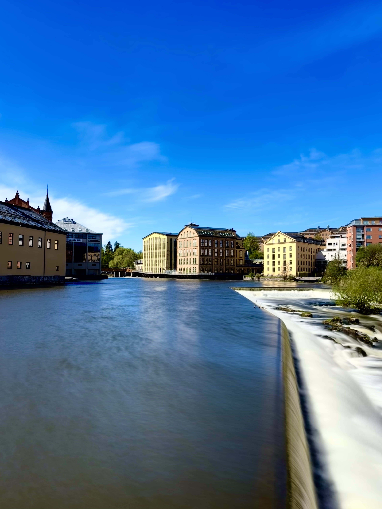
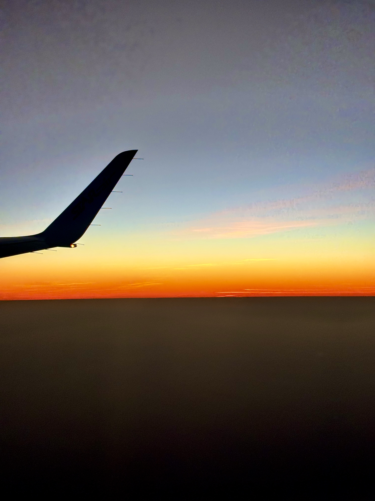

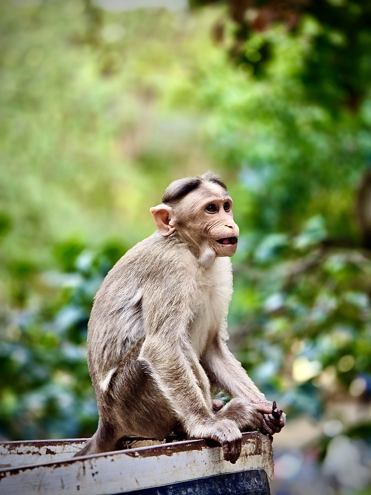
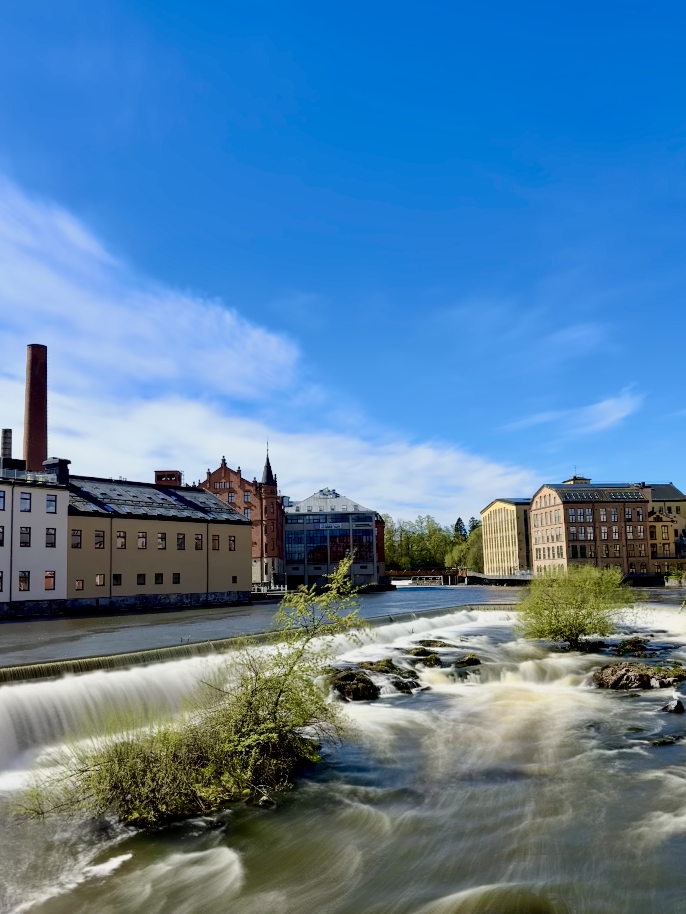
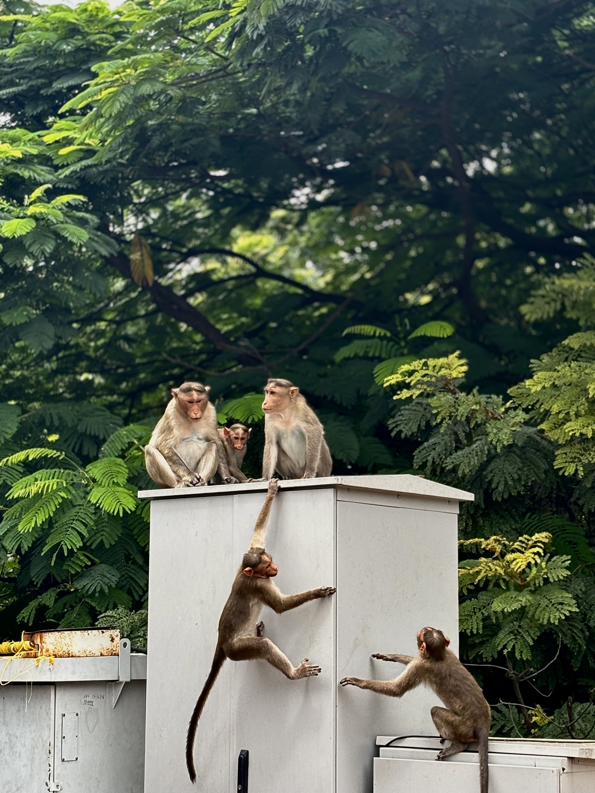
News & Links
Recent activities, features, and events I was involved in
Get in Touch
Open to research discussions, collaborations, and academic conversations.